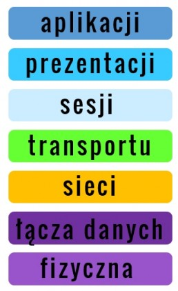
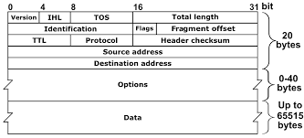
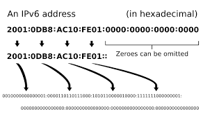

Co to jest protokół sieciowy?
Protokół sieciowy to zbiór reguł i standardów definiujących, w jaki sposób dane są przesyłane między urządzeniami w sieci. Protokoły zapewniają, że wszystkie urządzenia mogą się komunikować niezależnie od producenta.
Protokół sieciowy to zbiór reguł i standardów definiujących, w jaki sposób dane są przesyłane między urządzeniami w sieci. Protokoły zapewniają, że wszystkie urządzenia mogą się komunikować niezależnie od producenta.

Model OSI (Open Systems Interconnection) opisuje siedem warstw komunikacji sieciowej:

TCP/IP to podstawowa rodzina protokołów używana w Internecie. IP obsługuje adresowanie i routing, a TCP zapewnia niezawodną dostawę danych.
Protokoły warstwy aplikacji używane do przesyłania stron internetowych. HTTPS jest wersją szyfrowaną.
Tłumaczy nazwę domeny (np. google.com) na adres IP (np. 142.250.130.138).
Automatycznie przydziela adresy IP urządzeniom w sieci.

Adres IPv4 składa się z czterech oktetu (32 bity), np. 192.168.1.1
Klasy adresów:
Maska podsieci określa, która część adresu IP jest adresem sieci, a która adresem hosta. Przykład: 255.255.255.0
Adresy zarezerwowane do użytku w sieciach prywatnych (nie można ich używać w Internecie):

Nowy standard adresowania IP z 128-bitową przestrzenią adresową. Znacznie więcej dostępnych adresów niż IPv4. Format: 2001:0db8:85a3:0000:0000:8a2e:0370:7334
NAT pozwala urządzeniom w sieci prywatnej na komunikację z Internetem przy użyciu jednego publicznego adresu IP. Chroni również wewnętrzne adresy IP.